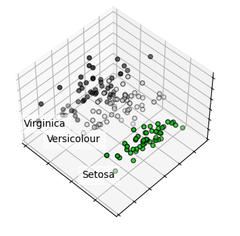

[Tugas 5] PCA#
import numpy as np
import matplotlib.pyplot as plt
from sklearn import decomposition
from sklearn import datasets
# unused but required import for doing 3d projections with matplotlib < 3.2
import mpl_toolkits.mplot3d # noqa: F401
np.random.seed(5)
iris = datasets.load_iris()
X = iris.data
y = iris.target
fig = plt.figure(1, figsize=(4, 3))
plt.clf()
ax = fig.add_subplot(111, projection="3d", elev=48, azim=134)
ax.set_position([0, 0, 0.95, 1])
plt.cla()
pca = decomposition.PCA(n_components=3)
pca.fit(X)
X = pca.transform(X)
for name, label in [("Setosa", 0), ("Versicolour", 1), ("Virginica", 2)]:
ax.text3D(
X[y == label, 0].mean(),
X[y == label, 1].mean() + 1.5,
X[y == label, 2].mean(),
name,
horizontalalignment="center",
bbox=dict(alpha=0.5, edgecolor="w", facecolor="w"),
)
# Reorder the labels to have colors matching the cluster results
y = np.choose(y, [1, 2, 0]).astype(float)
ax.scatter(X[:, 0], X[:, 1], X[:, 2], c=y, cmap=plt.cm.nipy_spectral, edgecolor="k")
ax.xaxis.set_ticklabels([])
ax.yaxis.set_ticklabels([])
ax.zaxis.set_ticklabels([])
plt.show()

# Load the dataset
from sklearn import datasets
from sklearn.model_selection import train_test_split
iris = datasets.load_iris()
X_train, X_test, y_train, y_test = train_test_split(iris.data, iris.target, test_size=0.2, random_state=100)
X_train[0:4,:]
array([[5.5, 2.4, 3.7, 1. ],
[5.7, 2.8, 4.1, 1.3],
[6. , 2.2, 5. , 1.5],
[4.8, 3. , 1.4, 0.1]])
from sklearn import linear_model
from scipy.special import expit
model = linear_model.LogisticRegression(C=1e5, solver='lbfgs')
model.fit(X_train, y_train)
model.score(X_test,y_test)
1.0
# magic code
from sklearn.decomposition import PCA
pca = PCA(n_components = 2)
pca.fit(iris.data)
# Transofm the iris data to just 2 dimensions
iris_red = pca.transform(iris.data)
X_train, X_test, y_train, y_test = train_test_split(iris_red, iris.target, test_size=0.2, random_state=100)
X_train[0:4,:]
array([[-0.18962247, -0.68028676],
[ 0.29900084, -0.34889781],
[ 1.30079171, -0.76114964],
[-2.78610927, -0.235112 ]])
# Now, let's fit the model with just these 2 variables.
model_red = linear_model.LogisticRegression(C=1e5, solver='lbfgs')
model.fit(X_train, y_train)
model.score(X_test,y_test)
1.0
import matplotlib.pyplot as plt
%matplotlib inline
plt.scatter(X_train[:,0],X_train[:,1],c = y_train)
<matplotlib.collections.PathCollection at 0x7f5e08e11d80>